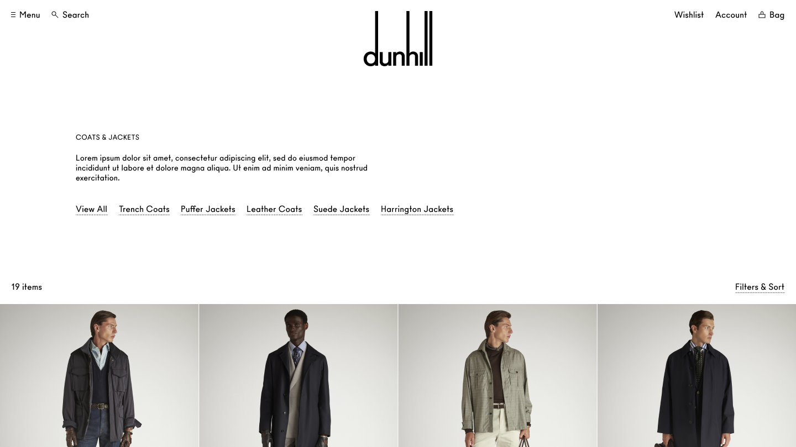
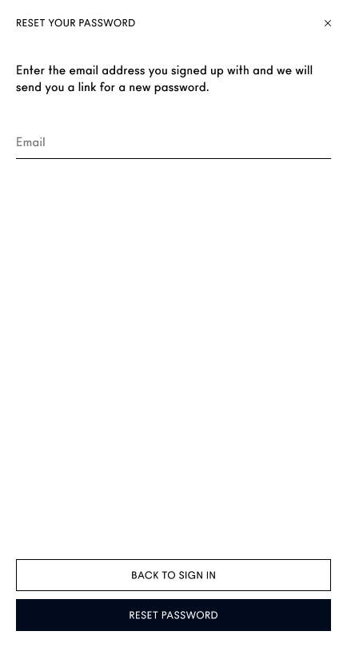
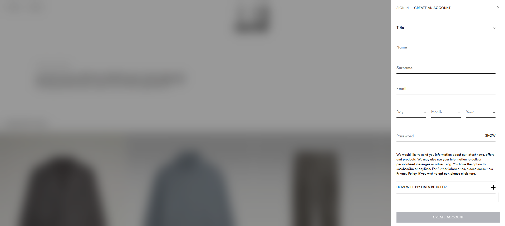
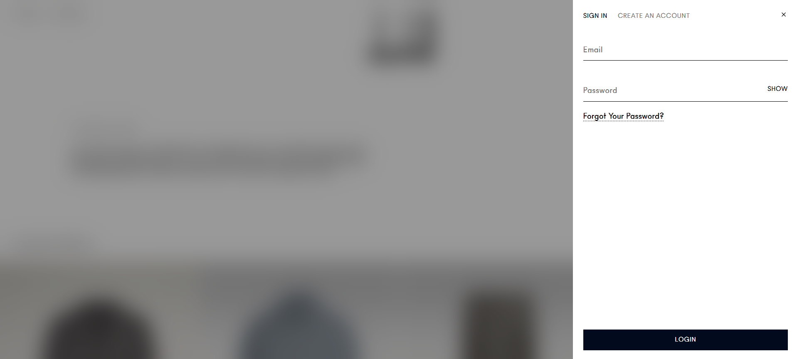

Dunhill — Luxury E-commerce Experience
- LIVE PLP Filter & Sort Panel View live website
- LIVE Sign In, Forgot Password & Create Account View Dunhill
- APPROVED, NOT RELEASED Add to Bag Loader — implemented in staging
Designing luxury e-commerce interactions within Salesforce Commerce Cloud, covering product discovery, account experiences and cart interactions across desktop, tablet and mobile.
Client Project & Confidentiality
This case study presents selected product design work from the Dunhill e-commerce experience. Some production details, business information and confidential project assets have been simplified or omitted.
Live pages are linked where they can be viewed. The focus is on my design decisions, collaboration with engineering, responsive design and what shipped.
01 — Product Context
Product
Dunhill's online store for luxury menswear and accessories, covering product discovery, product details, cart and checkout.
Platform
Salesforce Commerce Cloud with responsive experiences designed for desktop, tablet and mobile.
Design Challenge
Balance luxury brand expression with usability, responsive behaviour and technical feasibility within an existing platform.
My key contributions included the PLP Filter & Sort panel, account flows (Sign In, Forgot Password and Create Account), and the Add to Bag loader. I also contributed to the site footer and promotional banners.
02 — PLP Filter & Sort Panel
LIVEView live Filter & Sort experience
Problem
The filter experience needed to help shoppers narrow down products without overwhelming them with too many options. For a luxury brand, the interaction needed to feel simple, considered and consistent with the overall visual identity.
My Role
I designed the Filter & Sort panel across desktop, tablet and mobile (1440px, 768px and 375px), including open and closed states.
Constraints
- Maintain Dunhill's luxury visual language.
- Work within Salesforce Commerce Cloud.
- Integrate with the existing overlay behaviour.
- Maintain responsive behaviour across breakpoints.
Key Decisions & Trade-offs
- Filter grouping: Organised Sort, Product Type, Colour, Size and Material to make product refinement easier.
- Colour swatches: Used visual swatches because colour is easier to scan visually than through text alone. Swatches were discussed with engineering in relation to available inventory.
- Desktop behaviour: Used a right-side overlay to preserve the product listing context.
- Mobile behaviour: Used a full-width panel to make the filter controls easier to interact with on smaller screens.
Engineering Collaboration
Worked with engineering to review technical feasibility within Salesforce Commerce Cloud and ensure that the new panel would work with the existing overlay. Responsive behaviour and interaction details were discussed during handoff.
What Shipped
The Filter & Sort experience is available on the live Dunhill website. The screenshots below show my Figma design direction alongside the current live experience.
I did not retain a verified screenshot or specification of the previous filter, so I have not presented an unverified before-and-after comparison.
Outcome
The Filter & Sort experience was released on the production website. The live page provides evidence of implementation. No unverified conversion or usage figures are claimed.
What I'd Improve
I would validate the filter hierarchy through usability sessions and product-listing analytics, then refine the order and labels based on how shoppers narrow their choices.


03 — Account Flows
LIVEProblem
The account experience needed to support Sign In, Forgot Password and Create Account without making the interface feel complicated. Validation, error and success states needed to communicate clearly while maintaining a minimal luxury aesthetic.
My Role
I designed the Sign In, Forgot Password and Create Account overlays, including form validation, error messages, password requirements and success states.
Constraints
- Follow the existing account workflow.
- Maintain the Dunhill visual language.
- Keep validation messages clear and concise.
- Support the required account states.
Key Decisions
- Password requirements: Displayed requirements upfront, including one number, ten characters and one special character.
- Sign-in error: Used the message "Sorry, but your email or password is not recognised." This avoids identifying which credential was incorrect.
- Password reset success: Used a clear confirmation message: "Your password has been successfully reset."
- Visual consistency: Kept messages within the existing account flow rather than introducing unnecessary interface elements.
Engineering & QA Collaboration
Worked with developers to confirm implementation feasibility, overlay transitions and animation timing. The designed interactions and states were reviewed during QA to check that the implemented behaviour matched the intended design.
What Shipped
The account-flow designs were implemented as part of the Dunhill experience. The screenshots below show selected design and live account screens.
Outcome
The account-flow experience was implemented as part of the website. The live site provides a reference point for the experience. No unverified performance metrics are claimed.
What I'd Improve
I would review form analytics and support feedback to identify where users abandon or repeat steps, then test clearer inline validation and recovery guidance.
Design Screens



Live Implementation


04 — Add to Bag Loader
APPROVED, NOT RELEASEDImplemented in staging. Not currently live on Dunhill.
Problem
During a routine add-to-cart check, I noticed that the Add to Bag popup took approximately 5–7 seconds without providing clear loading feedback. Shoppers could not tell whether the item was being added, which could lead to repeated clicks.
My Role
I identified the usability issue, proposed a brand-consistent loading interaction, designed the loader and supported implementation.
Constraints
- Follow Dunhill brand guidelines.
- Work within one sprint (10 days).
- Respect the existing Add to Bag interaction.
Key Decisions & Trade-offs
- Diamond loader: Used a brand-consistent diamond animation instead of a generic spinner.
- Loading versus success: Kept loading and success as separate states. A success message should appear only after the system confirms the item has been added.
What Shipped
The design received client approval and was implemented in staging. It was not live on the production website when I left the project in July 2026.
Outcome
Client-approved design with staging implementation. Production release was not confirmed.
What I'd Improve
I would validate the loader behaviour under different network conditions and review the time between the loading state and the confirmed cart response.
05 — Additional Work on Dunhill
In addition to the main case studies, I contributed to the website footer and promotional banner experiences.
LIVE View Dunhill website

06 — Collaboration & My Role
I contributed from understanding the problem through interaction design, responsive UI, developer handoff, design QA and implementation validation. Work ran in sprints, with direct collaboration with the Dunhill design team.
Collaborated With
- Dunhill designer and design team
- Product / business stakeholders
- Engineering team
- QA team
Key Activities
- Design reviews
- Technical feasibility discussions
- Responsive design specifications
- Developer handoff
- Design QA and implementation validation